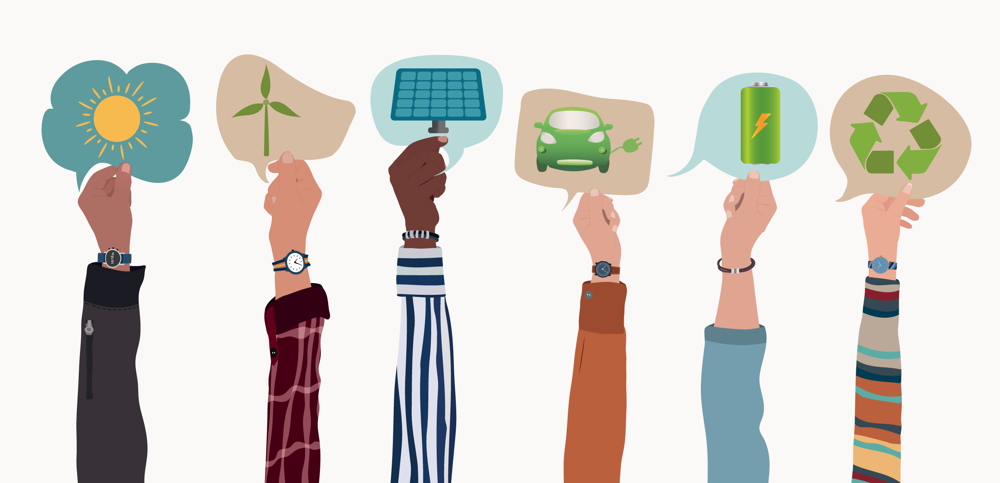
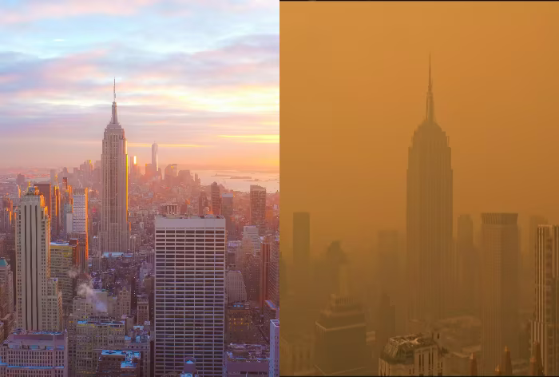
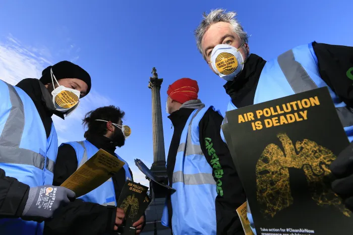

Our Goal
To raise awareness and drive solutions for environmental and public health issues affecting Lower Manhattan, especially related to air quality, greenery, and urban development.


Problems and Solutions
Air pollution, reduced greenery, and construction debris are real threats to public health. We advocate for expanded green zones, stricter construction regulations, and community-led change to improve air quality for all residents.
Meet the Team
Our dedicated team includes 4 Seidenburg scholars and environmental advocates working together for cleaner skies in Manhattan.
- Melvin Biju
- Kahlamb Lewis
- Nicolas Rossi
- Meti Lubanovic
